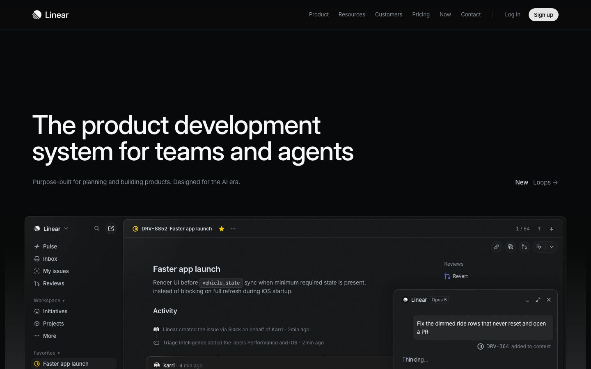
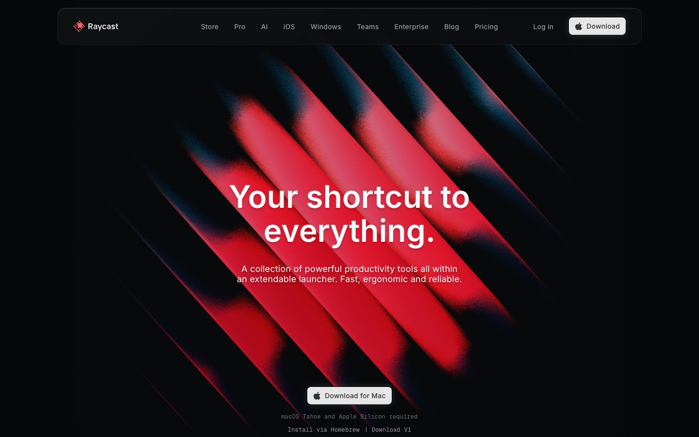
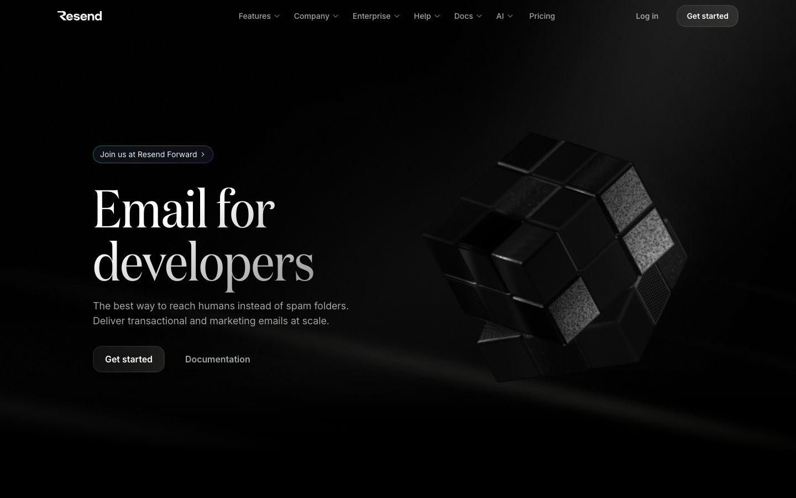
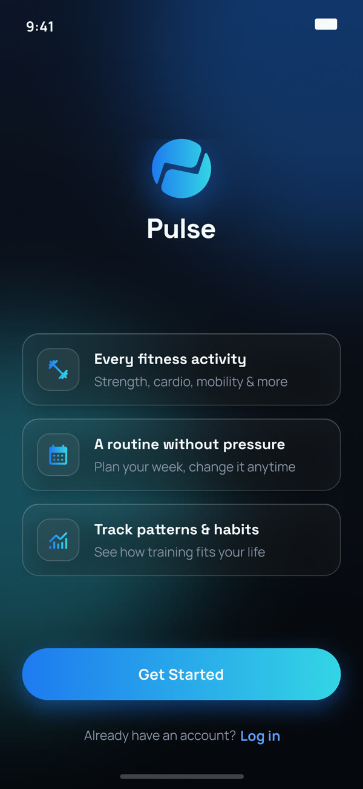

OPR
(Optical Phishing Recognition)
AI driven visual phishing detection
The dark world: the whole page in Cyvore's own violet-black, with its purple used as light, only where the product shows. The shared blocks (shell, at a glance, challenges, impact, next) follow the Eventread board; the middle is Cyvore's own. Liam's words in Geist; Michroma and Iceland only inside the product. Section copy verbatim from cyvore.ts and cyvore.mdx; figure captions and small labels are new and need Liam's OK.



Research, information architecture, prototype and investor presentations
About 1 month, part of a 2025–26 contract
Solo, reviewed with the CTO, a developer and DevOps
Project-based contract
A linear site vs an investor meeting. Cyvore was raising its first round. Its website was linear: about 35 seconds of non-stop scrolling to reach a section, and no story holding it together.
Fine for a visitor, wrong for a founder presenting live, who needs any answer in one click.
Nobody had asked for a redesign. I pitched one.
One screen, everything. I rebuilt the information architecture around the meeting, not the scroll. The main screen swaps between Security, Exposure, Coverage and Enables with hover and click animations, while both navigation bars stay visible the whole time.
The numbers you need to see
Three proprietary engines
(Optical Phishing Recognition)
AI driven visual phishing detection
(Threat Intelligence Autonomous Operation)
Proactive threat engine that mimics analyst behavior, catching Zero-Day threats before they are launched.
(Data Analysis NLU)
Context-aware language model that understands behavioral patterns across human and AI agents.
Chapter 1 of 4
Wherever the presentation is, every section is one move away.
Motion with a job. Every animation carries the founder from one answer to the next. A 7-second sequence tells the product's mission: a phishing link lands in a video call, and Cyvore blocks it.
The design system behind it: type, colour tokens and component states.
Headings, navigation and buttons
The chapter bar, set apart
The CEO wanted the full product video on the site.
I argued for a 7-second animation of the product's mission, with the video one click away. In a meeting you present with visual support; you don't narrate over a video. And investors had likely seen the only public product video already.
My 7-second animation shipped on the site, with a button on the screen that opens the full video on YouTube.
The people the site was for, investors in a live meeting, weren't available to test with.
I tested with the three people who'd present it, the CTO, a developer and DevOps: four navigation tasks, with the task order counterbalanced.
With them, finding a section fell from about 35s to about 8s.
Used as the live product presentation in investor meetings.3 of 3 stakeholders completed all four tasks.
“We weren't looking for a designer. Liam reached us and thanks to his work, we closed our first funding round.”
A goal-focused fitness app designed around four retention milestones.
